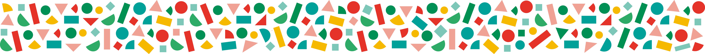

Notion: organiza microfases
De una ficha con dudas a tres tareas pequeñas que puedas revisar.
1. Empieza
Qué vas a conseguir
Usa una ficha ficticia para proponer tres microfases pequeñas. Si tienes una conexión autorizada, guárdalas en una página de prueba de Notion y comprueba allí el resultado. Si no, obtendrás un plan revisado como borrador, sin afirmar que Notion cambió.
2. Prepara el ejercicio
Qué necesitas
Una cuenta de Notion con permiso para crear una página de prueba y un asistente que admita el conector de Notion. La disponibilidad depende de la cuenta, del cliente y, en algunos espacios, de la aprobación del administrador. Descarga la ficha ficticia y la plantilla de microfase; no uses datos reales.
La fecha y el horario de la ficha no están aprobados. Mantén esa duda visible. Puedes llegar desde NotebookLM si ya has contrastado la ficha con sus fuentes.
3. Conecta y comprueba
Prepara la conexión
- En Notion, crea una página privada «Proyecto de prueba — Arregla y comparte» y pega la ficha. Añade una línea «Marca de prueba:» seguida de unas palabras inventadas por ti que no aparezcan en esta guía ni vayas a escribir en el chat.
- En el catálogo de conectores de tu asistente, busca Notion, elige el espacio correcto y completa la autorización. También puedes abrir Configuración → Notion MCP en Notion y seguir el directorio de clientes. Revisa qué páginas puede ver la cuenta autorizada. Sigue la guía oficial de conexión si los menús han cambiado.
- Si usas Claude Code y ya tienes acceso a él, comprueba primero si Notion figura en
claude mcp list. Si no figura, la guía oficial documentaclaude mcp add --transport http notion https://mcp.notion.com/mcp; abre Claude Code, ejecuta/mcpy completa la autorización. Añadir una configuración o ver «Connected» todavía no prueba que lea esta página.
Esta secuencia procede de la documentación de Notion; confirma cada paso y los permisos en tu cuenta antes de seguir. Un asistente sin conector puede ayudarte con la ficha pegada, pero trabajará sobre una copia y no modificará Notion.
Prueba mínima de acceso
Sin pegar la marca de prueba en el chat, pide al asistente que abra la página mediante la conexión y lea esa línea. Comprueba en Notion que reproduce la marca exacta y que el enlace devuelto es la página correcta. Si no coincide, detente: una respuesta plausible no demuestra acceso.
Usa la conexión de Notion para abrir la página «Proyecto de prueba — Arregla y comparte». Devuélveme su enlace y el texto exacto de la línea que empieza por «Marca de prueba:». No deduzcas ni inventes la línea. No cambies la página.4. Haz la práctica
Hazlo paso a paso
- Tras superar la prueba mínima, pide que separe decisiones y dudas sin cambiar la página.
- Solicita tres microfases con resultado y comprobación concretos. Revisa que no se inventen fecha ni horario.
- Autoriza añadir únicamente tres bloques de tarea sin marcar dentro de la página de prueba. No necesitas crear una base de datos ni una propiedad de estado.
- Abre Notion y comprueba los títulos, el contenido y las tres casillas sin marcar en la página correcta. Conserva el enlace de la página; no repitas la escritura si ya aparecen.
Resultado esperado: tres tareas pequeñas dentro de la página correcta, no una simple respuesta en el chat.
Prompts copiables
1. Leer
Localiza la página de prueba «Arregla y comparte» mediante la conexión de Notion e identifícala con su enlace. Resume objetivo, decisiones confirmadas y dudas pendientes. No cambies nada. Si no puedes acceder, dímelo. Si trabajo con una copia pegada, indícalo en la respuesta.2. Planificar
Con la ficha de «Arregla y comparte», propón tres microfases pequeñas. Para cada una indica objetivo, entradas, trabajo, resultado y cómo comprobarlo. Mantén fecha y horario como pendientes. Muéstrame la propuesta antes de escribir en Notion.3. Crear tras revisar
Estas son las tres microfases revisadas: [pega aquí tu versión aprobada]. Añádelas como tres bloques de tarea sin marcar dentro de la página de prueba identificada y devuelve el enlace de esa página. No cambies otras páginas. Si no puedes escribir, explica el fallo y conserva el plan como borrador.5. Comprueba el resultado
Comprueba, guarda y vuelve a abrir
Abre el enlace de la página en Notion; verifica que corresponde al proyecto y contiene tres tareas con un resultado comprobable y las casillas sin marcar. Confirma que la fecha y el horario siguen pendientes. Cierra la pestaña de Notion, vuelve a abrir la página desde tu espacio y comprueba que las tres tareas siguen allí. Guarda el enlace de la página en la plantilla descargada si quieres conservar una referencia.
Una respuesta del asistente que dice «creado» no basta: el resultado debe existir en Notion. Si solo pegaste la ficha en un chat, guarda la propuesta como borrador y marca «escritura en Notion pendiente».
Si algo falla
- No aparece Notion en el catálogo o la autorización falla: consulta la guía oficial, comprueba cuenta y permisos del espacio. Si sigue sin estar disponible, trabaja con la ficha pegada y deja la escritura pendiente.
- La marca de prueba no coincide o encuentra otra página: detente y verifica el espacio y el enlace. No autorices cambios.
- Da por confirmado el horario: vuelve a la ficha y deja la discrepancia visible.
- Falla al escribir o crea duplicados: mira Notion antes de repetir la petición; conserva los enlaces de lo que exista.
6. Para seguir aprendiendo
Para seguir aprendiendo
Como ampliación, un agente puede leer una microfase, trabajar en archivos de un proyecto y dejar evidencias para revisión. MCP puede darle acceso a herramientas, pero no sustituye tu decisión ni demuestra que algo se completó. En Programar en 2027 puedes explorar ese trabajo con proyectos propios.